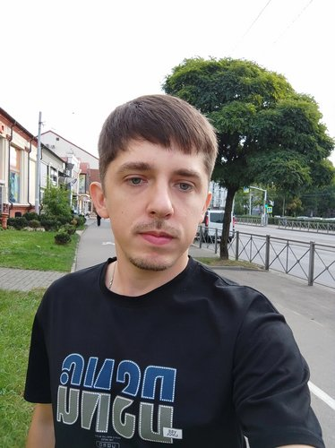

Симонов Роман Валерьевич
Профессиональные навыки
Разработка ПО с применением:
- Python
- C++
- Qt
- PyTorch
- MySQL
Работа с ос Linux
Разработка ПО для встраиваемых систем (микроконтроллеры STM32, Миландр)
Машинное обучение, применение нейросетей для программирования и создания изображений.
Знания в области схемотехники электронного оборудования, физики, математического анализа. Навыки работы в Mathcad и Matlab.
Специализация включает применение методов машинного обучения и цифровой обработки сигналов.
Учёная степень
Кандидат физико-математических наук. Тема диссертации: развитие методов оптимальной обработки ультразвуковых сигналов, защищена в Институте радиотехники и электроники им. В.А.Котельникова Российской академии наук.
Научный руководитель: дф-мн, профессор Пахотин В. А.С диссертацией можно ознакомиться по ссылке: cplire.ru/rus/dissertations/Simonov/
Место работы и публикации
НИИ Прикладной информатики и математической геофизики: kantiana.ru
Работа в команде над разработкой программного комплекса RTH-AI, позволяющего прогнозировать петрофизические, литологические и иные свойства коллектора углеводородов.
Автор большого количества научных публикаций по цифровой обработке сигналов и сейсморазведке. С публикациями можно ознакомиться по ссылке elibrary.ru
Автор зарегистрированной программы для ЭВМ №2019661261 "Азимут", осуществляющей подавление помех при обработке радиолокационных сигналов.